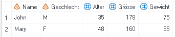
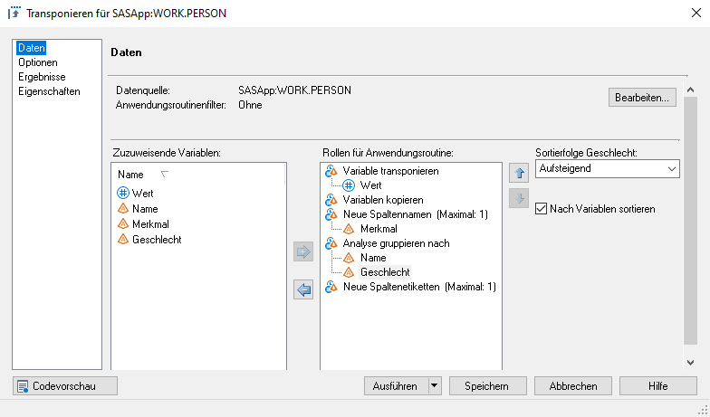
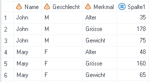

Transponieren
Die Anwendungsroutine «Transponieren» ermöglicht es, die Struktur eines Datensatzes zu ändern. Der Datensatz kann entweder vertikal oder horizontal strukturiert sein.
Beispiel: Ein Datensatz enthält für jede Person drei numerische Variablen - das Alter, die Grösse und das Gewicht.
- In der vertikalen Form sind die Werte für Alter, Grösse und Gewicht alle untereinander, also in einer Variable, erfasst. Für jede Person im Datensatz sind also drei Beobachtungen vorhanden.

- In der horizontalen Form sind die Werte auf drei verschiedene Variablen aufgeteilt, folglich existiert nur eine Beobachtung pro Person.

Horizontalisierung
Liegen die Daten in der vertikalen Form vor, werden aber für die Weiterverarbeitung in der horizontalen Form gebraucht, so kann das mittels «Transponieren» erreicht werden.

↓

Lösungsweg SAS Enterprise Guide
Schritt 1: Anwendungsroutine «Transponieren» auswählen.
Schritt 2: Die Variablen den richtigen Rollen zuordnen:
Variable transponieren: Hier muss die Analysevariable ausgewählt werden, deren Werte auf verschiedene Spalten aufgeteilt werden soll. In diesem Beispiel also Wert.Neue Spaltennamen (Maximal: 1): Hier wird die Variable ausgewählt, deren Ausprägungen die neuen Variablen bilden bzw. benennen sollen. In diesem Beispiel also Merkmal.Analyse gruppieren nach: In diesem Beispiel die Variablen Name und Geschlecht. Hier können auch noch mehr Variablen gewählt werden, z.B. wenn der Wert nicht nur nach Name und Geschlecht, sondern z.B. auch noch nach Nationalität ausgewiesen würde.

Schritt 3: Das Häkchen bei "Präfix verwenden" rausnehmen, damit die neuen Spaltennamen nicht mit dem Wort "Spalte" (Default) ergänzt werden.

Vertikalisierung
Liegen die Daten in der horizontalen Form vor, werden aber für die Weiterverarbeitung in der vertikalen Form gebraucht, so kann das ebenfalls mittels «Transponieren» erreicht werden.
↓

Lösungsweg SAS Enterprise Guide
Schritt 1: Anwendungsroutine «Transponieren» auswählen.
Schritt 2: Die Variablen den richtigen Rollen zuordnen:
Variable transponieren: Hier müssen die Analysevariablen ausgewählt werden, deren Werte in einer Spalte zusammengefasst werden sollen. In diesem Beispiel also Alter, Grösse und Gewicht.Analyse gruppieren nach: In diesem Beispiel die Variablen Name und Geschlecht. Hier können auch noch mehr Variablen gewählt werden, z.B. wenn der Wert nicht nur nach Name und Geschlecht, sondern z.B. auch noch nach Nationalität ausgewiesen würde.

Schritt 3: Namen für Quellspalte setzen, in diesem Fall soll sie Merkmal heissen.